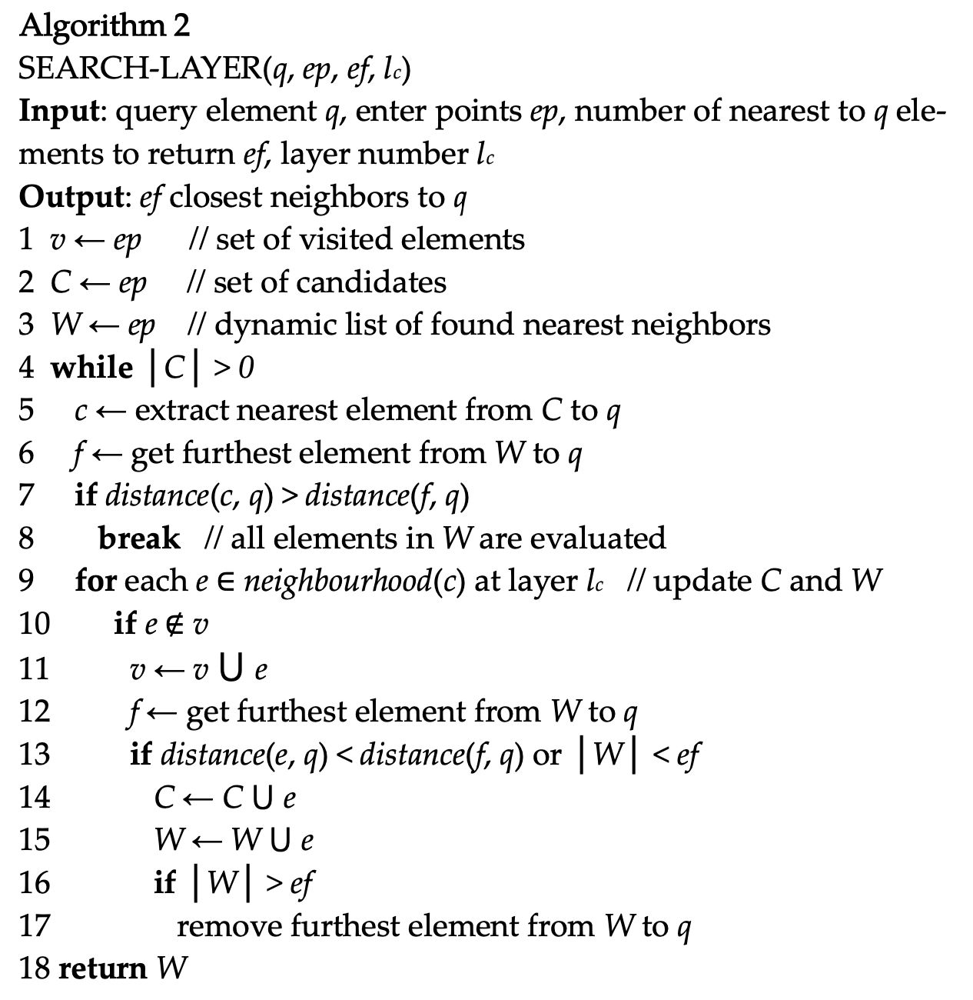

PGVECTOR AND VECTOR DATABASE
序言
pgvector是一个向量搜索（根据近似度）的插件，用来加速AKNN（approximate nearest neighbor）。
PASE中提到，向量ANN算法包括4类
1. tree-based algorithms
1. KD-Tree
2. RTree
2. quantization-based algorithms
1. IVFFlat
2. IVFADC
3. IMI
3. graph based algorithms
1. HNSW
2. NSG
3. SSG
4. hash-base algorithms
1. LSH
pgvector 包括两个算法，IVFFlat 和 HNSW，后续内容将以这两个算法的内容及其实现展开。
IVFFlat
概览
IVFFlat 算法主要包括以下几个步骤
+ 索引构建阶段
+ 使用 KMeans 将数据集划分成多个簇(cluster)
+ 查询阶段
+ 通过每个簇的中心点（向量是高维的点）获取N个最近的簇
+ 遍历这N个簇的所有点，从中找到最近的K个点
算法介绍
基础算法kmeans
reference k-means clustering - Wikipedia 算法目标：选取K个中心点，使得数据集中的所有点到其最近的中心点“距离”之和最近，以平方和距离为例：
Given a set of observations \((x_1, x_2, \dots, x_n)\), where each observation is a \(d\)-dimensional real vector, k-means clustering aims to partition the \(n\) observations into \(k\) (\(\leq n\)) sets \(S = {S_1, S_2, \dot, S_k}\) so as to minimize the within-cluster sum of squares (WCSS). Formally, the objective is to find: 算法过程： 我们可以很容易的证明目标函数是关于\(S\)的凸函数 Given an initial set of \(k\) means \(m_1^{1}, \dots , m_k^{(1)}\) (see below), the algorithm proceeds by alternating between two steps:
-
Assignment step: Assign each observation to the cluster with the nearest mean:
where each \(x_p\)is assigned to exactly one \(S^{t}\), even if it could be assigned to two or more of them. 2. Update step: Recalculate means (centroids) for observations assigned to each cluster.
kmeans 优化篇
上述算法虽然简洁，但计算上复杂度高。在pgvector的IVFFlat实现中，使用了一些优化算法，主要是如下两篇论文： * Using Triangle Inequality: 使用三角不等式减少两点间距离的计算次数 * KMeans++ :使用随机点的选取技巧来提高收敛速度和准确率 Using the Triangle Inequality to Accelerate k-Means (aaai.org) kMeansPP-soda.pdf (stanford.edu)
Using Triangle Inequality
思路： 1. 在高维向量中，计算一次两点之间的距离的代价较高。 2. 根据一些朴素的思想，假如使用的距离函数满足三角不等式\(d(a,b) \leq d(a,c) + d(b,c)\)，那么在一次
kmeams迭代中，如果点x距其中心点c(x)的距离很近，而c(x)距另一个中心点c(y)的距离很远，那么c(y)必然不是x的中心点，这样就可以避免一次计算。
根据三角不等式可以推出
1. Let x be a point and let b and c be centers. If \(d(b, c) > 2d(x,b)\), then \(d(x,c) \geq d(x,b)\)
2. Let x be a point and let b and c be centers, then \(d(x,c) \geq \mathrm{max} \{0,d(x,b)-d(b,c)\}\)
根据上述定理，在Kmeans迭代期间，维护一些状态，即可减少计算量 过程如
KMeans++
论文中的数学分析很多，其主要目的为：通过在初始化的时候选取恰当的中心点，减少迭代次数。方法为： 假设向量的全集为\(X=\{x_1,x_2,\dots,x_n\}\subset \mathbb{R}^d\) ,\(D(x)\) 表示点 \(x\) 到其当前中心点的距离
- 从\(X\) 中随机选择一个点\(c_1\)
- 以\(\frac{D(x')}{\sum_{x\in X}D(x)}\) 的概率选择\(x'\)为\(c_i\)
- 重复上一步直到我们选择了 \(k\) 个中心点，
- 使用标准的k-means算法进行后续处理
实现介绍
page representation
Key functions
index build
索引构建分为以下几个步骤
- 计算中心点
- 构建元信息页（'meta page'）
- 构建中心点页（'centerid pages'）
- 构建数据页（'data pages'）
ivfflatbuild
BuildIndex
InitBuildState
ComputeCenters
CreateMetaPage
CreateListPages
CreateEntryPages
FreeBuildState
计算中心点
- 实现上，没有扫描所有的行以计算中心点，而是“采样”一些
block。- 会选择\(ncenter \times 50\) 作为采样
block的数量
- 会选择\(ncenter \times 50\) 作为采样
ComputeCenters
SampleRows
/* The number of target samples is the number of centers times 50 */
numSamples = buildstate->lists * 50;
buildstate->samples = VectorArrayInit(numSamples, buildstate->dimensions);
BlockSampler_Init
> provides algorithm for block level sampling of a relation as discussed on
pgsql-hackers 2004-04-02 (subject "Large DB")
Since we know the total number of blocks in advance, we can use the straightforward
Algorithm S from Knuth 3.4.2, rather than Vitter's algorithm.
reservoir_init_selection_state
while (BlockSampler_HasMore(&buildstate->bs))
table_index_build_range_scan: callback=SampleCallback
IvfflatKmeans # Do as kmeans algrithm
if (samples->length <= centers->maxlen)
QuickCenters(index, samples, centers);
else
ElkanKmeans(index, samples, centers);
SampleCallback
AddSample
if (samples->length < targsamples)
VectorArraySet
else
if (buildstate->rowstoskip < 0)
rowstoskip = reservoir_get_next_S #skip some future samples
else
k = sampler_random_fract
VectorArraySet # replace a old with this one randomly
构建元信息页
CreateMetaPage # info about meta information
IvfflatNewBuffer
IvfflatInitRegisterPage
IvfflatCommitBuffer
构建中心点页
当一个页的剩余空间不够时，使用字段nextblkno指向下一个页
typedef struct IvfflatPageOpaqueData
{
BlockNumber nextblkno;
uint16 unused;
uint16 page_id; /* for identification of IVFFlat indexes */
} IvfflatPageOpaqueData;
CreateListPages # info about center infomation
foreach sampled vector
if (PageGetFreeSpace < listSize) # we need more free space to store the vector
IvfflatAppendPage
newbuf = IvfflatNewBuffer
newpage = GenericXLogRegisterBuffer
IvfflatPageGetOpaque
old_page->next = this_page
IvfflatInitPage
PageAddItem # copy this point to the page
构建数据页
CreateEntryPages # omit parallel optimization here
AssignTuples # Scan table for tuples to index
tuplesort_performsort
InsertTuples
for (int i = 0; i < buildstate->centers->length; i++)
buf = IvfflatNewBuffer(index, forkNum); # add new page for each data page list
startPage = BufferGetBlockNumber(buf); # the first page number
foreach tuple in this list:
if (PageGetFreeSpace(page) < itemsz) # append page
IvfflatAppendPage(index, &buf, &page, &state, forkNum);
PageAddItem()
IvfflatUpdateList(); # update the first page record of the center page
index scan
begin scan
ivfflatbeginscan
IvfflatGetMetaPageInfo(index, &lists, &dimensions); # Get lists and dimensions from metapage
get tupele
ivfflatgettuple
if (first) # try to get the first tuple
GetScanLists # find 'probe' centers that are closest
while (BlockNumberIsValid(nextblkno)) # search all list pages
if (distance < maxDistance) # omit probe here for easier understanding
scanlist = (IvfflatScanList *) pairingheap_remove_first(so->listQueue);
pairingheap_add(so->listQueue, &scanlist->ph_node);
maxDistance = ((IvfflatScanList *) pairingheap_first(so->listQueue))->distance;
GetScanItems # find closest items in the above centers
while (!pairingheap_is_empty(so->listQueue)) # for each center
while (BlockNumberIsValid(searchPage)) # for each block in the data list
foreach (tuple)
tuplesort_puttupleslot
HNSW
概览
HNSW 算法主要包括以下几个步骤 * 索引构建 * 构建层级邻近图 * 每一层都是邻近图 —— 每个点都记录它最近的几个点 * 高一层的图是低一层图的缩略图 —— 只有低一层图的部分点 ——，最低一层的图有全部点的信息。 * 查询阶段，对于目标点\(p\) * 对于每一层图： * 维护一个图中距点\(p\)最近的点集合\(S\)，依次从候选点集合\(C\)中选取一个元素\(c\)：如果\(c\)的邻居\(neighbor(c)\)比\(S\)中距\(p\)最远的点\(s\)距\(p\)更近，即\(d(neighbor(c), p) < d(s,c)\) ，则用\(neighbor(c)\)替换集合\(S\)中的点\(s\)，并将\(s\)加入到候选集合\(C\)中。重复以上步骤直到\(|c| = 0\) * 从高层图向底层图搜索，使用高层图的结果\(S\)作为低层图\(S\)和\(C\)的初始值。
算法介绍
一下顺序只是为了便于理解，不代表论文发布顺序。更多细节可参考论文。
NSW —— HNSW的起源?
NSW可以视为邻近图，每个点维护至多\(K\)个距离其最近的点，此时HNSW退化为只有一层的特殊情况。
NSW的构建
构建NSW的算法如下（此处忽略边角情况以方便理解
INPUT: a set of points S
OUTPUT: graph G
BUILD_LAYER(S)
G = []
# Insert each point into the graph
FOREACH point IN S: ---------- INSERT_POINT(graph, point)
neighbors[] = select_one_random(G)
candidate[] = neighbors[]
visited_points[] = neighbors[]
# Code in this WHILE loop is to find the neighbors of the point
# in current graph
WHILE (!candidate.empty())
nearest_candidate = candidate.pop_nearest(point)
furthest_neighbor = neighbors.get_furthest(point)
# no candidate can b closer
IF (distant(nearest_candidate, point) >
distant(furthest_neighbor, point))
break;
# This candidate is great, but what about its neighbors?
FOREACH candidate_neighbor in nearest_candidate.neighbors()
IF (visited_points.has(candidate_neighbor))
continue
visited_points.append(candidate_neighbor)
# the furthest one can be changed
furthest_neighbor = neighbors.get_furthest(point)
# The neighbor of this candidate is also great, its neighbors
# can also be candidates
IF (distant(candidate_neighbor, point) <
distant(furthest_neighbor, point))
candidate.append(candidate_neighbor)
neighbors.append(candidate_neighbor)
IF (neighbors.size() > MAX_NEIGHBORS)
neighbors.pop_furthest(point)
# Now we have found the neighbors, add a bidirection connections
# between the each neighbor and the point
FOREACH this_neighbor in neighbors
add_bidirection_direction(this_neighbor, point)
# Since the neighbor has one more connection, we may need
# to shrink. This is a point to optimize. Read paper for detail.
IF this_neighbor.neighbors().size() > MAX_NEIGHBORS
this_neighbor.drop_longest_connection()
# All points have been added
RETURN G
NSW的搜索
OUTPUT: graph G, point P
RETURN K nearest neighbors
SEARCH_LAYER(G, p, K)
candidates = select_one_random(G)
visited_points = candidates
# LOOP until we have K stable points
WHILE TRUE
candidates_old = candidates
FOREACH candidate in candidates
FOREACH neighbor in candidate.neighbors()
if (visited_points.has(neighbor))
continue
visited_points.add(neighbor)
furthest_candidate = candidates.get_furthest(point)
IF (distant(neighbor, P) < distant(furthest_candidate, P) ||
candidates.size() < K)
candidates.add(neighbor)
IF (candidates.size() > K)
candidates.pop_furthest(P)
IF candidates_old == candidates
BREAK
RETURN candidates
HNSW —— NSW的进化
显然，上述过程最大的问题之一为： 1. 对于图的构建：每新加入一个点，都需要从一个随机点开始搜索它的邻居。 2. 对于图的搜索：需要从一个随机点开始搜索。 以上两点导致，NSW算法搜索了很多无用的点。 H(hierarchy)NSW 为解决这个问题，从NSW图（layer=0）中选出部分点，再构建一个缩略的NSW图（layer=1）。在搜索的时候，只需要从layer=1的图中搜索出一个粗略结果，将该结果用于layer=0搜索过程中的初始化，即可大量减少无用的搜索。同理，层数也不一定只有2层，可以有更多。 （这个思想在科研中似乎经常使用:先得出一个粗略的结果，再进一步精细化）
为了构建一个这样的图，我们在插入一个点时。
INPUT: point P, a series of NSW graph G[]
cur_layer = -ln(unif(0, 1)) * MAX_LAYER
# for layer upper than current layer, just get a candidate
FOR l from MAX_LAYER to cur_layer + 1
closest_points = SEARCH_LAYER(G[l], P, 1, candidates = closest_point)
# insert into each layer from top to bottom of the below layers
FOR l from cur_layer to 0
closest_points = SEARCH_LAYER(G[l], P, 1, candidates = closest_points)
INSERT_POINT(graph, P, neighbors = closest_points)
同理在搜索时
INPUT: point P, a series of NSW graph G[]
cur_layer = P.layer
# for layer upper than current layer, just get a candidate
FOR l from MAX_LAYER to cur_layer + 1
closest_points = SEARCH_LAYER(G[l], P, 1, candidates = closest_point)
# for layer leq than current layer, just get a candidate
FOR l from cur_layer to 0
closest_points = SEARCH_LAYER(G[l], P, 1, candidates = closest_point)
return closest_points
PGVECTOR中的算法实现
INSERT
/*
* Algorithm 1 from paper: update graph by inserting an element
* Parms:
* @element: element to insert
* @entryPoint: the initial entry point
* @index?
* @procinfo
* @collation
* @m: same as "M" in algo(number of established connections)
*/
HnswInsertElement(HnswElement element, HnswElement entryPoint,
Relation index, FmgrInfo *procinfo, Oid collation,
int m, int efConstruction, bool existing)
level = element->level;
q = PointerGetDatum(element->vec)
# fill entry point list with the initial one
ep = list_make1(HnswEntryCandidate(entryPoint,))
# for layers upper than the element's level
for (int lc = entryLevel; lc >= level + 1; lc--)
# only get the nearest element now
w = HnswSearchLayer()
ep = w;
# for the below layers
for (int lc = level; lc >= 0; lc)
# search for top efConstruction nearest ones
w = HnswSearchLayer(efConstruction)
lw = w
# get neighbors
neighbors = SelectNeighbors(lw, lm, lc, procinfo, collation, NULL);
# add connection
# Is this different from paper?
# bidirectional vs single directional
# shrink directions or not shrink
AddConnections()
foreach(lc2, neighbors)
a->items[a->length++] = *((HnswCandidate *) lfirst(lc2));
search layer

/*
* Algorithm 2 from paper: search this layer with specifiyed enter points to
* return "ef" closest neighbors
* Parms:
* @q: same as algo
* @ep: enter points
* @ef: count of closest neighbors
* @lc: layer number
* @index:
* @procinfo:
* @collation:
* @inserting:
* @skipElement:
*/
List *
HnswSearchLayer(Datum q, List *ep, int ef, int lc, Relation index,
FmgrInfo *procinfo, Oid collation, int m, bool inserting,
HnswElement skipElement)
v = NULL. # visited points
C = NULL # set of candidates, nearer first
W = NULL # dynamic found nearest neighbors
# for each candidate in enter points
foreach(lc2, ep)
hc = (HnswCandidate *) lfirst(lc2); # HNSW candidates
v.add(hc)
C.add(hc)
W.add(hc)
# loop until no more candidates
while (!C.empty())
c = C.pop_nearest()
# for each neighbor "e" in the nearest candicate "c"
neighborhood = &c->element->neighbors[lc];
for (int i = 0; i < neighborhood->length; i++)
# neighbor e
HnswCandidate *e = &neighborhood->items[i];
v.add(e)
DO # continue if visited
# f is the furthest element in dynamic neighbors
f = W.furthest()
# find a good neighbor who is closer to q than the worst one in W
if (DISTANT(e, q) < DISTANT(f, q) || wlen < ef)
ec = e
# neighbor of ec can also be the candidates
C.add(ec)
# add ec to W to promote the lower bound
W.add(ec)
# clean W if it's too large
if (skipElement == NULL ||
list_length(e->element->heaptids) != 0)
wlen++;
/* No need to decrement wlen */
if (wlen > ef)
W.pop_furthest
return W
pairing heap
配对堆 - OI Wiki (oi-wiki.org) * insert(\(\mathrm{log}n\)) * random_select(\(\mathrm{log} n\)) select_min(\(\mathrm{log} n\)) * delete_min(\(\mathrm{log} n\))
select neighbors
/*
* Algorithm 4: select neighbors starting with specified candidates
* PARAMS:
* @c : candidates
* @m : number of neighbors to return
* @lc: layer number
* @
*
* NOTES:
* extendCandidates = false
* keepPrunedConnections = true
* pruned
*/
static List *
SelectNeighbors(List *c, int m, int lc, FmgrInfo *procinfo, Oid collation,
HnswCandidate * *pruned)
r = NULL # results---returning neighbors
w = c # working candidates
wd = NULL; # discarded candidates;
# Since we don't extend candidates, if the starting candidates isn't enought
# just return.
if (list_length(w) <= m)
return w
# loop untils no more working candidate or enought neighbors
while (length(w) > 0 && length(r) < m)
*e = llast(w); # get the nearest candidates
closer = CheckElementCloser(e, r, lc, procinfo, collation);
if(closer)
r.append(e)
else
wd.append(e)
# loop until discarded candidates are empty or enough neighbors
while (!wd.empty() && length(r) < m)
r.append(wd.pop_nearest())
prune = wd.nearest()
return r
data structure
typedef struct HnswElementData
{
List *heaptids;
uint8 level;
uint8 deleted;
HnswNeighborArray *neighbors;
BlockNumber blkno;
OffsetNumber offno;
OffsetNumber neighborOffno;
BlockNumber neighborPage;
Vector *vec;
} HnswElementData;
typedef struct HnswCandidate
{
HnswElement element;
float distance;
} HnswCandidate;
typedef struct HnswNeighborArray
{
int length;
HnswCandidate *items;
} HnswNeighborArray;
底层实现中的问题
- 论文中的图是双向连接，而pgvector实现的是单向连接
- pgvector中插入新向量时，没有更新其邻居的连接。（这么低级的问题有待验证）
page representation
vector database 调研
qdrant
Vector databases are optimized for storing and querying these high-dimensional vectors efficiently, and they often using specialized data structures and indexing techniques such as Hierarchical Navigable Small World (HNSW) – which is used to implement Approximate Nearest Neighbors – and Product Quantization, among others.
算法与存储
qdrant使用 hnsw 算法
A key feature of Qdrant is the effective combination of vector and traditional indexes. It is essential to have this because for vector search to work effectively with filters, having vector index only is not enough. In simpler terms, a vector index speeds up vector search, and payload indexes speed up filtering.
payload 索引仅用于过滤，我们关注向量索引部分
Qdrant currently only uses HNSW as a vector index.
All data within one collection is divided into segments. Each segment has its independent vector and payload storage as well as indexes.
附录
trianlge-inequality-Kmeans
- 维护的状态：
- lower bound \(l(x,c)\) of \(d(x,c)\) for each point \(x\) and center \(c\)
- each time \(d(x,c)\) is computed, set \(l(x,c)=d(x,c)\)
- \(c(x)= \mathrm{argmin}_cd(x,c)\) get its center for each point \(x\)
- upper bound \(u(x)\) of \(d(x,c)\) for each point \(x\), indicating the upper bound of \(x\) to its center
- \(r(x)\) is a
booleanvalue indicate whether \(u(x, c)\) is out of date
- lower bound \(l(x,c)\) of \(d(x,c)\) for each point \(x\) and center \(c\)
- 过程：
- initialization
- compute \(d(x,c)\) for each point \(x\) and each center \(c\), which means \(l(x,c)\) is computed too
- \(u(x)=\mathrm{min}_c(d,c)\) for each point \(x\)
- repeate until convergence:
- For each pair of centers \(c\) and \(c'\) , compute \(d(c,c')\), this is to compute \(s(c)=1/2\min_{c'\neq c}d(c,c')\) . So we get the distance to the nearest center of each center
- identify all point \(x\) such that \(u(x) \le s(c(x))\) .If the point is so near to its center, its center can't be changed in this iteration. See lemma 1
- For each remaining point \(x\) and centers \(c\) such that
- \(c\neq c(x)\) (not the current center) and
- \(u(x)>l(x,c)\) (upper bound to current center greater than lower bound of this center) and
- \(u(x)>\frac{1}{2}d(c(x),c)\)(upper bound to current center greater than half of the two centers distant, See lemma 1) iterm
2and3means \(u(x)\) may be too big - DO:
- If \(r(x)\) , compute\(d(x, c(x))\) and set \(r(x)=false\), else \(d(x,c(x))=u(x)\)
- if \(u(x)>l(x,c)\) and \(u(x)>\frac{1}{2}d(c(x),c)\) then (same as the above)
- compute \(d(x,c)\), if \(d(x,c) < d(x,c(x))\) then assign \(c(x)=c\) (update center)
- For each center \(c\) , let \(m(c)\) be the new mean point
- For each point \(x\) and center \(c\), assign \(l(x,c)=\max\{l(x,c)-d(c,m(c))\}\) (update lower bound by lemma 2)
- For each point x, assign \(u(x)=u(x) + d(m(c(x)),c(x))\) (update lower bound by lemma 2 ) and \(r(x)=true\)
- Replace each center \(c\) by \(m(c)\)
- initialization
采样算法 Knuth's algorithm S
- 算法描述： Select \(n\) items from a set of \(M\) iems with equal probility for \(M \geq n\)
- 实现
参考文档 Knuth's algorithm S - Rosetta Code 。
社区讨论 [PostgreSQL: Re: GENERAL] Large DB
后记
- pg官方的新闻：PostgreSQL: pgvector 0.5.0 Released! 。pgvector在社区的热度不小